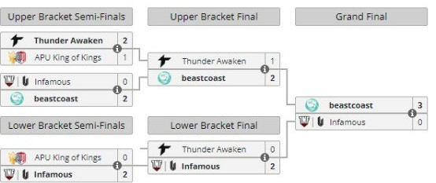

Comenzando el camino hacia el mayor evento competitivo de dota2 las clasificatorias regionales ya implementadas el año pasado en sudamerica nos traen a la luz la gran rivalidad de los equipos thunder awaken y beast coast que son los favoritos a clasificar sin embargo los equipos de infamous y apukings no les dejaran una tarea facil
Quedando asi en la cima thunder pero sorprendetemente saliendo segundo llegaria infamous por encima de beast coast y apukings respectivamente
lastimosamente por las restricciones el major es cancelado pero se jugaran unas regionales que tendran premios en efectivo y puntos DPC
Beast coast lograria redimirse ganando el primer lugar ante infamous mientras que thunder y apukings quedarian eliminados previamente